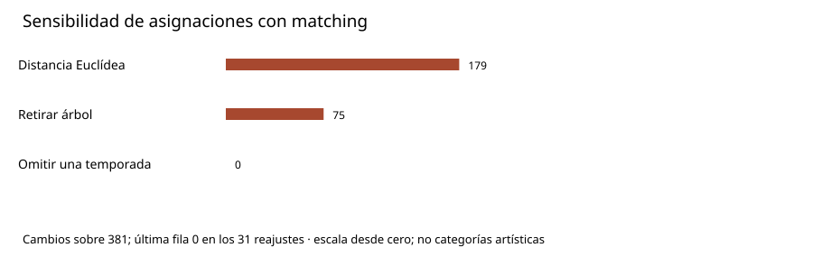

Revisión actual de la profundización
19-11-2026 · v01 · DRAFT · decisión PENDING
Resumen ejecutivo
DR-05a encontró una razón medible para profundizar agrupamiento: filas vacías crean una sala aparente y las métricas discrepan. Los cálculos de sensibilidad se ejecutaron con el plan leído al iniciar la sesión, antes de integrarse PR #17. Se conservan como evidencia, sin registrarlos como una decisión humana: cambiar a Euclídea mueve 179 de 381 asignaciones, retirar árbol mueve 75 y omitir una temporada no mueve ninguna en 31 reajustes. La representación importa más que esa perturbación temporal específica. Frente a HF-01 añadimos controles, pero su promoción editorial sigue retenida hasta HF-02. Recomiendo priorizar validación de anotaciones y algoritmos antes de afirmar estilos. Faltan permisos para validación humana e imágenes y QA visual del informe.
Recomendación: Priorizar BR-09. No se registra aprobación humana.
Qué cambió
| Antes | Ahora | Impacto |
|---|---|---|
| HF-01/v01 | HF-01/DR-05a → controles ya calculados, decisión humana actual pendiente. | Decisión PENDING; cálculos no equivalen a aprobación |
Hallazgo y límite
Hay desacuerdo entre métricas y estabilidad frente a las 31 omisiones de temporada.
Resultado descriptivo del snapshot/método; no inferir estilos, intención ni salud. Cifras y evidencia.
Gráficas de evidencia y sensibilidad
Silhouette con y sin tres filas vacías

Sensibilidad de asignaciones con matching

Tabla alternativa y procedencia
{
"legacy_computed_o2": {
"id": "BR-09-O2",
"parent_id": "BR-09-O1",
"status": "EXECUTED_EXPLORATORY",
"trigger_evidence": "results/o1_results.json#/BR-09",
"activation_checkpoint": "DR-05a.md",
"source_sha256": "42045c8b8aaa8296095d6b294927fb9d0f73a57259f59b560c375844c0fe01cf",
"aligned_changes_k4": {
"euclidean": {
"changed_n": 179,
"n": 381,
"mapping_to_primary": [
1,
0,
3,
2
],
"changed_ids": [
"S01E02",
"S01E03",
"S01E08",
"S01E10",
"S01E11",
"S01E13",
"S02E02",
"S02E03",
"S02E05",
"S02E09",
"S03E01",
"S03E02",
"S03E04",
"S03E07",
"S03E10",
"S03E11",
"S03E12",
"S04E01",
"S04E03",
"S04E06",
"S04E08",
"S04E12",
"S05E02",
"S05E04",
"S05E05",
"S05E10",
"S06E02",
"S06E06",
"S06E07",
"S06E09",
"S06E10",
"S06E11",
"S06E12",
"S07E01",
"S07E02",
"S07E04",
"S07E06",
"S07E07",
"S07E08",
"S07E10",
"S07E12",
"S08E01",
"S08E02",
"S08E03",
"S08E04",
"S08E06",
"S08E07",
"S08E08",
"S08E09",
"S08E12",
"S09E01",
"S09E03",
"S09E04",
"S09E05",
"S09E07",
"S09E08",
"S09E09",
"S09E10",
"S09E11",
"S09E12",
"S09E13",
"S10E02",
"S10E07",
"S10E08",
"S10E11",
"S10E12",
"S10E13",
"S11E01",
"S11E02",
"S11E05",
"S11E06",
"S11E07",
"S11E09",
"S11E12",
"S12E02",
"S12E07",
"S12E10",
"S12E11",
"S12E12",
"S12E13",
"S13E01",
"S13E03",
"S13E05",
"S13E08",
"S13E09",
"S13E10",
"S14E03",
"S14E04",
"S14E05",
"S14E06",
"S14E08",
"S14E11",
"S14E12",
"S15E01",
"S15E04",
"S15E07",
"S15E08",
"S15E09",
"S15E12",
"S16E03",
"S16E04",
"S16E09",
"S17E03",
"S17E05",
"S17E06",
"S17E08",
"S17E12",
"S18E03",
"S18E05",
"S18E12",
"S19E04",
"S19E05",
"S19E12",
"S19E13",
"S20E03",
"S20E07",
"S20E09",
"S20E11",
"S21E03",
"S21E07",
"S21E10",
"S21E11",
"S21E13",
"S22E02",
"S22E05",
"S22E07",
"S22E10",
"S23E01",
"S23E04",
"S23E05",
"S23E07",
"S23E08",
"S23E11",
"S24E01",
"S24E02",
"S24E03",
"S24E05",
"S24E13",
"S25E07",
"S25E08",
"S25E11",
"S25E12",
"S25E13",
"S26E03",
"S26E07",
"S26E08",
"S26E10",
"S27E01",
"S27E03",
"S27E04",
"S27E05",
"S27E06",
"S27E07",
"S27E08",
"S27E11",
"S27E13",
"S28E02",
"S28E03",
"S28E09",
"S28E10",
"S28E13",
"S29E01",
"S29E02",
"S29E04",
"S29E06",
"S29E08",
"S29E11",
"S29E12",
"S30E03",
"S30E05",
"S30E07",
"S30E08",
"S31E01",
"S31E04",
"S31E07",
"S31E08",
"S31E09",
"S31E12",
"S31E13"
],
"ari": 0.10912138346241812
},
"without_tree": {
"changed_n": 75,
"n": 381,
"mapping_to_primary": [
0,
1,
2,
3
],
"changed_ids": [
"S01E03",
"S02E11",
"S03E04",
"S03E06",
"S03E11",
"S04E07",
"S05E10",
"S05E13",
"S07E02",
"S08E03",
"S08E04",
"S08E05",
"S08E07",
"S08E09",
"S09E08",
"S09E10",
"S10E02",
"S10E03",
"S10E13",
"S11E03",
"S11E07",
"S12E01",
"S13E04",
"S13E05",
"S14E05",
"S14E12",
"S15E03",
"S15E04",
"S15E08",
"S15E10",
"S15E11",
"S15E12",
"S16E02",
"S16E09",
"S17E02",
"S17E05",
"S17E08",
"S17E11",
"S18E11",
"S19E04",
"S19E10",
"S19E12",
"S20E02",
"S20E10",
"S21E05",
"S21E07",
"S21E09",
"S22E05",
"S23E02",
"S23E05",
"S24E04",
"S24E07",
"S25E06",
"S25E09",
"S25E11",
"S26E02",
"S26E10",
"S27E04",
"S27E05",
"S27E06",
"S27E08",
"S27E13",
"S28E02",
"S28E04",
"S28E05",
"S28E07",
"S28E13",
"S29E05",
"S30E04",
"S30E12",
"S31E03",
"S31E04",
"S31E07",
"S31E08",
"S31E12"
],
"ari": 0.5752363034826563
}
},
"complete_case_grid": [
{
"k": 2,
"n": 378,
"sizes": [
204,
174
],
"medoids": [
"S01E04",
"S25E09"
],
"silhouette_same_jaccard_space": 0.21584648943872062,
"ari_vs_full_k4_on_common_rows": 0.5706195151677635
},
{
"k": 3,
"n": 378,
"sizes": [
236,
106,
36
],
"medoids": [
"S01E04",
"S01E01",
"S09E02"
],
"silhouette_same_jaccard_space": 0.2711444578218839,
"ari_vs_full_k4_on_common_rows": 1.0
},
{
"k": 4,
"n": 378,
"sizes": [
236,
106,
22,
14
],
"medoids": [
"S01E04",
"S01E01",
"S09E02",
"S01E09"
],
"silhouette_same_jaccard_space": 0.25802031174495715,
"ari_vs_full_k4_on_common_rows": 0.9913313980493301
},
{
"k": 5,
"n": 378,
"sizes": [
209,
79,
54,
22,
14
],
"medoids": [
"S01E04",
"S01E01",
"S15E10",
"S09E02",
"S01E09"
],
"silhouette_same_jaccard_space": 0.2413008848765719,
"ari_vs_full_k4_on_common_rows": 0.7495877635869854
},
{
"k": 6,
"n": 378,
"sizes": [
174,
93,
46,
29,
22,
14
],
"medoids": [
"S01E04",
"S01E01",
"S01E11",
"S03E06",
"S09E02",
"S01E09"
],
"silhouette_same_jaccard_space": 0.2505746664514964,
"ari_vs_full_k4_on_common_rows": 0.6207239601013406
}
],
"representation_sensitivity": {
"raw_columns": [
"APPLE_FRAME",
"AURORA_BOREALIS",
"BARN",
"BEACH",
"BOAT",
"BRIDGE",
"BUILDING",
"BUSHES",
"CABIN",
"CACTUS",
"CIRCLE_FRAME",
"CIRRUS",
"CLIFF",
"CLOUDS",
"CONIFER",
"CUMULUS",
"DECIDUOUS",
"DOCK",
"DOUBLE_OVAL_FRAME",
"FARM",
"FENCE",
"FIRE",
"FLORIDA_FRAME",
"FLOWERS",
"FOG",
"FRAMED",
"GRASS",
"HALF_CIRCLE_FRAME",
"HALF_OVAL_FRAME",
"HILLS",
"LAKE",
"LAKES",
"LIGHTHOUSE",
"MILL",
"MOON",
"MOUNTAIN",
"MOUNTAINS",
"NIGHT",
"OCEAN",
"OVAL_FRAME",
"PALM_TREES",
"PATH",
"PERSON",
"PORTRAIT",
"RECTANGLE_3D_FRAME",
"RECTANGULAR_FRAME",
"RIVER",
"ROCKS",
"SEASHELL_FRAME",
"SNOW",
"SNOWY_MOUNTAIN",
"SPLIT_FRAME",
"STRUCTURE",
"SUN",
"TOMB_FRAME",
"TREE",
"TREES",
"TRIPLE_FRAME",
"WATERFALL",
"WAVES",
"WINDMILL",
"WINDOW_FRAME",
"WINTER",
"WOOD_FRAMED"
],
"n_features": 64,
"ari_12_families_vs_64_non_author_labels": 0.3076048526537683,
"medoids_64": [
"S12E10",
"S09E06",
"S25E12",
"S09E10"
]
},
"leave_one_season_out": [
{
"omitted_season": 1,
"train_n": 368,
"ari_all_381": 1.0,
"changed_n_all_381": 0,
"medoids": "S02E08;S02E10;S09E02;S09E10"
},
{
"omitted_season": 2,
"train_n": 368,
"ari_all_381": 1.0,
"changed_n_all_381": 0,
"medoids": "S01E04;S01E01;S09E02;S09E10"
},
{
"omitted_season": 3,
"train_n": 369,
"ari_all_381": 1.0,
"changed_n_all_381": 0,
"medoids": "S01E04;S01E01;S09E02;S09E10"
},
{
"omitted_season": 4,
"train_n": 370,
"ari_all_381": 1.0,
"changed_n_all_381": 0,
"medoids": "S01E04;S01E01;S09E02;S09E10"
},
{
"omitted_season": 5,
"train_n": 372,
"ari_all_381": 1.0,
"changed_n_all_381": 0,
"medoids": "S01E04;S01E01;S09E02;S09E10"
},
{
"omitted_season": 6,
"train_n": 368,
"ari_all_381": 1.0,
"changed_n_all_381": 0,
"medoids": "S01E04;S01E01;S09E02;S09E10"
},
{
"omitted_season": 7,
"train_n": 370,
"ari_all_381": 1.0,
"changed_n_all_381": 0,
"medoids": "S01E04;S01E01;S09E02;S09E10"
},
{
"omitted_season": 8,
"train_n": 369,
"ari_all_381": 1.0,
"changed_n_all_381": 0,
"medoids": "S01E04;S01E01;S09E02;S09E10"
},
{
"omitted_season": 9,
"train_n": 368,
"ari_all_381": 1.0,
"changed_n_all_381": 0,
"medoids": "S01E04;S01E01;S10E05;S15E04"
},
{
"omitted_season": 10,
"train_n": 369,
"ari_all_381": 1.0,
"changed_n_all_381": 0,
"medoids": "S01E04;S01E01;S09E02;S09E10"
},
{
"omitted_season": 11,
"train_n": 368,
"ari_all_381": 1.0,
"changed_n_all_381": 0,
"medoids": "S01E04;S01E01;S09E02;S09E10"
},
{
"omitted_season": 12,
"train_n": 368,
"ari_all_381": 1.0,
"changed_n_all_381": 0,
"medoids": "S01E04;S01E01;S09E02;S09E10"
},
{
"omitted_season": 13,
"train_n": 368,
"ari_all_381": 1.0,
"changed_n_all_381": 0,
"medoids": "S01E04;S01E01;S09E02;S09E10"
},
{
"omitted_season": 14,
"train_n": 369,
"ari_all_381": 1.0,
"changed_n_all_381": 0,
"medoids": "S01E04;S01E01;S09E02;S09E10"
},
{
"omitted_season": 15,
"train_n": 368,
"ari_all_381": 1.0,
"changed_n_all_381": 0,
"medoids": "S01E04;S01E01;S09E02;S09E10"
},
{
"omitted_season": 16,
"train_n": 370,
"ari_all_381": 1.0,
"changed_n_all_381": 0,
"medoids": "S01E04;S01E01;S09E02;S09E10"
},
{
"omitted_season": 17,
"train_n": 370,
"ari_all_381": 1.0,
"changed_n_all_381": 0,
"medoids": "S01E04;S01E01;S09E02;S09E10"
},
{
"omitted_season": 18,
"train_n": 368,
"ari_all_381": 1.0,
"changed_n_all_381": 0,
"medoids": "S01E04;S01E01;S09E02;S09E10"
},
{
"omitted_season": 19,
"train_n": 368,
"ari_all_381": 1.0,
"changed_n_all_381": 0,
"medoids": "S01E04;S01E01;S09E02;S09E10"
},
{
"omitted_season": 20,
"train_n": 368,
"ari_all_381": 1.0,
"changed_n_all_381": 0,
"medoids": "S01E04;S01E01;S09E02;S09E10"
},
{
"omitted_season": 21,
"train_n": 368,
"ari_all_381": 1.0,
"changed_n_all_381": 0,
"medoids": "S01E04;S01E01;S09E02;S09E10"
},
{
"omitted_season": 22,
"train_n": 368,
"ari_all_381": 1.0,
"changed_n_all_381": 0,
"medoids": "S01E04;S01E01;S09E02;S09E10"
},
{
"omitted_season": 23,
"train_n": 368,
"ari_all_381": 1.0,
"changed_n_all_381": 0,
"medoids": "S01E04;S01E01;S09E02;S09E10"
},
{
"omitted_season": 24,
"train_n": 369,
"ari_all_381": 1.0,
"changed_n_all_381": 0,
"medoids": "S01E04;S01E01;S09E02;S09E10"
},
{
"omitted_season": 25,
"train_n": 369,
"ari_all_381": 1.0,
"changed_n_all_381": 0,
"medoids": "S01E04;S01E01;S09E02;S09E10"
},
{
"omitted_season": 26,
"train_n": 368,
"ari_all_381": 1.0,
"changed_n_all_381": 0,
"medoids": "S01E04;S01E01;S09E02;S09E10"
},
{
"omitted_season": 27,
"train_n": 369,
"ari_all_381": 1.0,
"changed_n_all_381": 0,
"medoids": "S01E04;S01E01;S09E02;S09E10"
},
{
"omitted_season": 28,
"train_n": 368,
"ari_all_381": 1.0,
"changed_n_all_381": 0,
"medoids": "S01E04;S01E01;S09E02;S09E10"
},
{
"omitted_season": 29,
"train_n": 369,
"ari_all_381": 1.0,
"changed_n_all_381": 0,
"medoids": "S01E04;S01E01;S09E02;S09E10"
},
{
"omitted_season": 30,
"train_n": 369,
"ari_all_381": 1.0,
"changed_n_all_381": 0,
"medoids": "S01E04;S01E01;S09E02;S09E10"
},
{
"omitted_season": 31,
"train_n": 369,
"ari_all_381": 1.0,
"changed_n_all_381": 0,
"medoids": "S01E04;S01E01;S09E02;S09E10"
}
],
"limits": [
"LOSO compares learned labels to full-data labels, not independent artistic truth",
"Deterministic heuristic is not proven global PAM optimum",
"12-motif zero profiles may arise through aggregation; only 3 are raw-all-zero here",
"BR-09-O3 remains CONDITIONAL; authorized images and human protocol missing"
]
},
"publication_status": "WITHHELD_PENDING_HF02",
"human_response": null
}
Cómo, por qué y para qué
CÓMO: CSV auditado y transformaciones declaradas, nulos condicionados, correcciones múltiples y controles; código en research/. POR QUÉ: los vacíos, prevalencias y representación producen patrones distintos. PARA QUÉ: escoger qué vale la pena comprobar y enseñar con incertidumbre.
Una pregunta para JC
¿Priorizamos BR-09 para revisar anotaciones y comparar algoritmos antes de buscar estilos o color?
Opciones: Priorizar BR-09 / Aplazar profundización / Reorientar a BR-07. Recomiendo Priorizar BR-09. Coste de continuar: CPU local y revisión; no se autoriza descarga de imágenes. Si se aplaza, se conservan resultados sin nueva promoción O2.
Respuesta: PENDING. Registro de feedback.
Evidencia y siguiente decisión
Continuar revisión de datos vacíos/algoritmos solo dentro del alcance autorizado. HF-02 sigue pendiente y el audiovisual bloqueado. Este paquete aún requiere QA visual a 360px/1280px y teclado.
Transición de protocolo PR17 · Informe científico · QA y límites · Metadatos del checkpoint · Generador.
SHA-256 del dataset: 42045c8b8aaa8296095d6b294927fb9d0f73a57259f59b560c375844c0fe01cf. Atribución: Walt Hickey/FiveThirtyEight, CC BY 4.0; gráficos propios derivados de etiquetas, sin pinturas ajenas. Versión v01: primera entrega de este hito, retrospectiva; no inventa versión aprobada previa.